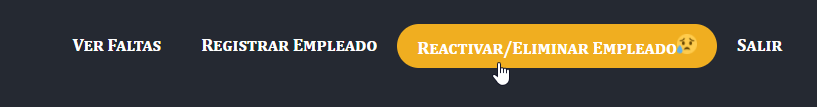
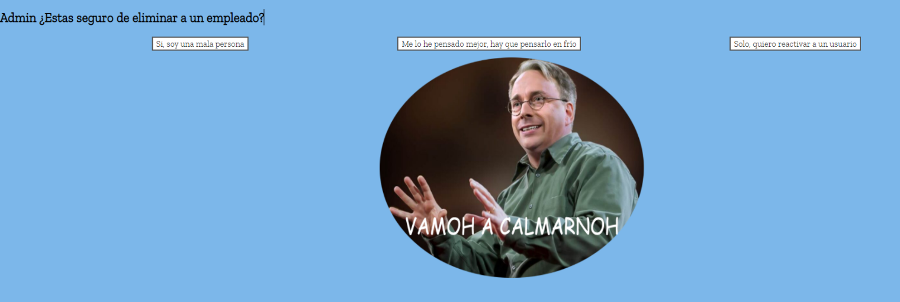
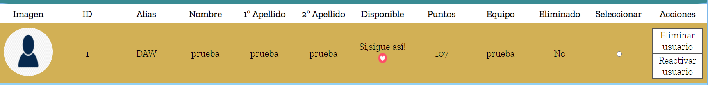
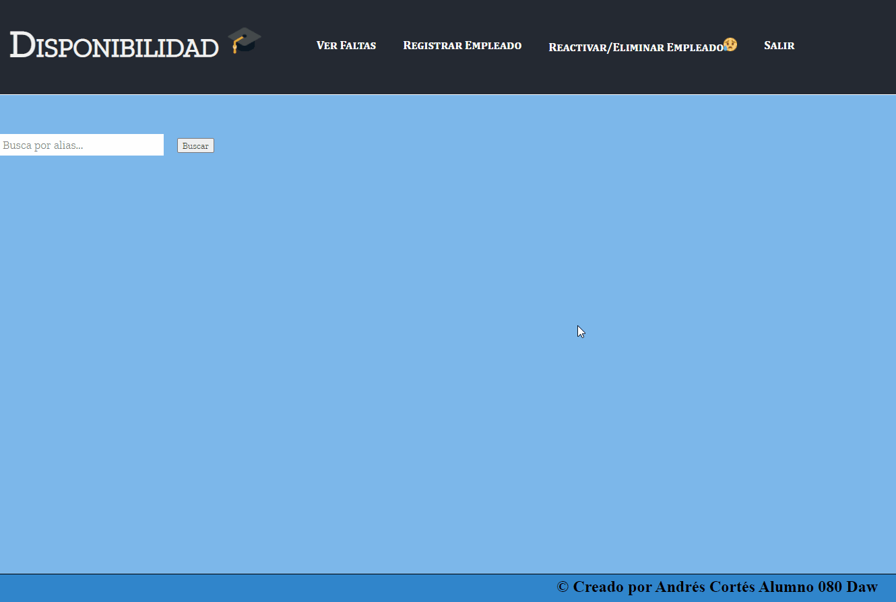

Nos tenemos que ir al menú 'Reactivar/Eliminar Empleado '
 Tenemos tres opciones 'Si, soy una mala persona y solo quiero reactivar a un usuario', en estas dos nos llevará a los empleadosy podemos seleccionar los empleados que queremos eliminar o reactivar, también si se eliminan los empleados, las faltas aparecerán como eliminadas si se reactiva, se reactivarán todas.
La otra opción que hay es 'Me lo he pensado mejor, hay que pensarlo en frío nos llevará a youtube a que nos distraigamos con un video de risa.'
Si le damos a unas de las opciones anteriores nos volvera a parecer la barra de la búsqueda que funciona igual que en el anterior.

Tendremos nuevos datos para mostrar la id del usuario y si esta eliminado o no.
Demostración
Para reactivar usuario, hacemos lo mismo pero le damos al botón de reactivar usuario.